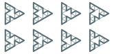
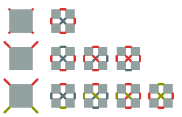

Sierpiński graphs
Grinding through some math riddles I found one that really struck me. The solution was slick and I longed for a generalization. This is the account of a very brief success.
The riddle
Let $S_0$ be the complete graph of order three, and $S_{n+1}$ be three copies of $S_n$ joined in pairs by their vertices of degree $2$.
The succession gives the steps in the construction of the Sierpiński graph. We want to know the number of hamiltonian cycles on $S_n$, i.e. the number of closed paths crossing every vertex exactly once.
Try to answer now - it’s a lot of fun!
Finger counting
Let us be naïf and just count the cycles. It’s easy to see that we have one on $S_0$ and $S_1$. Things start to get interesting with $S_2$, where we have eight. What about $S_3$?

It turns out we have roughly a lot - precisely, too much for us to count: $13824$. Any pedestrian computational intent would also be easily choked by $S_4$ with its $71328803586048$ hamiltonian cycles. That number means every single cell in a kid could take a different path on the graph. Now that’s gruesome.
Recurrence relations
The laernean nature of the problem is easily tamed exploiting the recursive structure of $S_n$. In fact, it reflects on the counting problem giving an anticlimatic way to break it down.
Let’s lighten the prose naming the various kind of paths on $S_n$ we will need:
- $O$-paths are hamiltonian cycles;
- $C$-paths are hamiltonian paths between vertices of degree $2$;
- $V$-paths are hamiltonian paths between vertices of degree $2$ that don’t tread the third one.
We denote their number on $S_n$ adding $n$ as a subscript.
The vertices joining copies of $S_n$ to form $S_{n+1}$ are the only possible crossing points between them. Therefore the portion of an $O$-path between a pair of them must completely tread one. This leads to the observation that an $O$-path on $S_{n+1}$ is the gluing of three $C$-paths on $S_n$.
A $C$-path must cross two of the joining vertices to reach the third vertex of degree $2$, but it’s not a cycle so it can’t cross the third joining vertex to the adjacent copy of $S_{n}$. This means a $C$-path on $S_{n+1}$ is one of the two possible gluings of two $C$-paths and a $V$-path on $S_n$.
A similar argument holds for $V$-paths, except that it must skip the third vertex of degree $2$. Therefore a $V$-path on $S_{n+1}$ is one of the two possible gluings of two $V$-paths and a $C$-path on $S_n$.
Excellent! We captured the counting problem into some recurrence relations. Doing some easy counting we complete the description with the starting values:
We’re lucky: these can be solved into a closed form. Plugging the last two recurrence relations into themselves $i$ times we obtain where $x_1=z_1=1$ and $y_1=2$.
The recurrence relations constrain the exponents as and are easily solved:
We nailed it:
General construction
The Sierpińskian construction is easily generalized to any base graph $S_0=(V_0,E_0)$.
Let’s call the steps $S_{n}=(V_n,E_n)$. To build $S_{n+1}$ we take a copy of $S_n$ for each vertex of $S_0$. Thus, the vertex set $V_{n+1}$ and the relation $E_{n+1}$ can be drafted as We need to join the subgraphs. Denoting $v_{(n+1)}=(v_{(n)},v)$ and $v_{(1)}=v$, the vertices to join are given by the relation $J_{n+1}$ defined as Quotienting the vertices, we obtain
The properties of $S_n$ vary wildly depending on $S_0$ and $n$. However, if $S_0$ is a complete graph it’s easy to show that every step of the iteration $S_n$ has an hamiltonian cycle. For this reason we restrict our attention to complete graphs.
Picture staring
The Sierpińskian construction happens to be trivial for complete graphs of order $0$, $1$ and $2$ and easily handled at order three, as we have seen. At order four things get awkward: we were able to solve the triangular case in closed form only because the low order brought some non apparent simplifications into the involved combinatorics. On the other hand, at orders higher than four no new phenomenology appears. This means that the case of order four is both the first to fully manifest the structure of the construction and the last wieldy enough to be manually dealt with.
To keep this readable we need some graphical notation. Let’s review the case of $K_3$.
Lines and dots represent edges and vertices. Each one of the graphs represent $S_{n+1}$. The gluing vertices have been prolonged to an edge. Gray triangles represent $S_n$. Edges and vertices with the same color belong to the same path, while gray ones belong to none. An edge leading out of the graph represents the end of an open path.
The three graphs perfectly capture the three recurrence relations we found.
Let’s take it up a notch and think about $K_4$.

The left column gives the possible choices for the vertices of $S_{n+1}$ of lowest degree. An omitted vertex can belong to any path, or to none. Each left graph must be completed choosing a possible set of gluing vertices from its right. These are listed up to permutations of the subgraphs $S_n$. A special care must be taken when gluing a pair of disjoint paths, as this can be done in various inequivalent ways.
This is complicated, but as we said no other special notations are necessary to handle higher orders.
Let’s name the needed kinds of paths using somewhat suggestive letters:
- $O$-paths are hamiltonian cycles;
- $C$-paths are hamiltonian paths between vertices of degree $3$;
- $V$-paths are hamiltonian paths between vertices of degree $3$ skipping one of the other two;
- $I$-paths are hamiltonian paths between vertices of degree $3$ skipping the other two;
- $X$-paths are a pair of hamiltonian paths between vertices of degree $3$.
The pictures allow us to write the recurrence relations avoiding an excessive amount of pain to keep track of symmetries. I present the calculations using a bizarre notation. The first factors are the possible gluings of subpaths and represent just the product of their numbers. The other factors handle symmetries by just counting them. Each symbol can be just interpreted as a $1$. Boxes are identity, opposing arrowheads are permutations of the subgraphs and $=$, $\shortparallel$ and $\times$ are the possible gluings of pairs of paths.
So we obtain
These are going to be hard to disentangle. The best I can do is noticing
So the problem is reduced to
Welp.